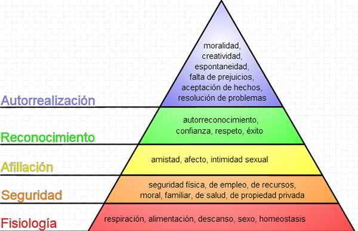
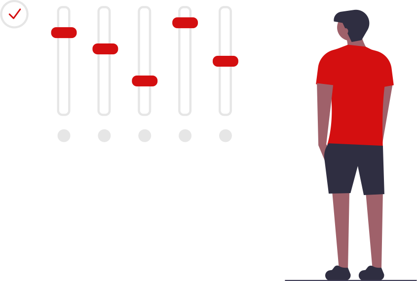
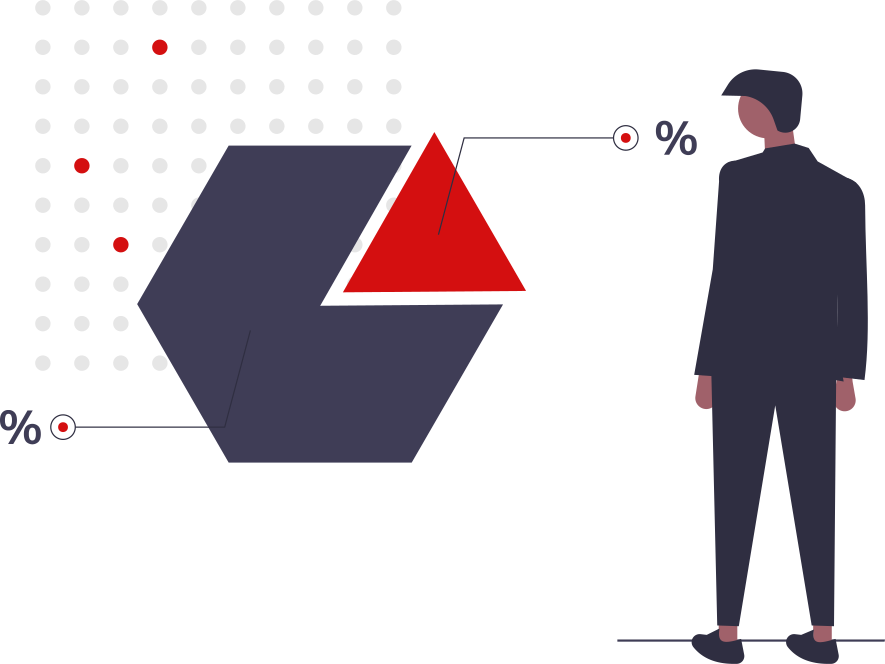
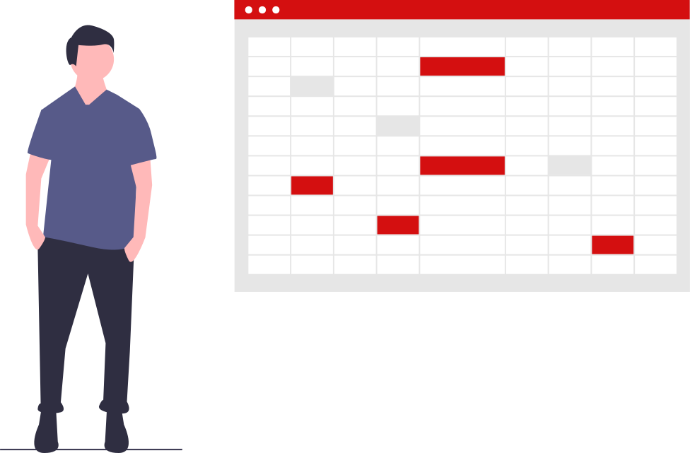

Antecedentes
Proyectos:
- SENTIDO DE PERTENENCIA E INCLUSIÓN SOCIAL,
DESDE LAS EXPECTATIVAS DE LOS ESTUDIANTES DE NUEVO INGRESO EN LA UDO ANACO
- EL SENTIDO DE PERTENENCIA (SP) COMO ELEMENTO DE LA CULTURA ORGANIZACIONAL (CO):
FACTORES QUE INCIDEN EN SU DESARROLLO
SENTIDO DE PERTENENCIA E INCLUSIÓN SOCIAL, DESDE LAS EXPECTATIVAS
DE LOS ESTUDIANTES DE NUEVO INGRESO EN LA UDO ANACO
La mayoría de los estudiantes manifestaron que perciben que no se generaron incentivos,
recompensas y estímulos que los impulsen en forma permanente a desempeñarse cada vez mejor
dentro de la institución. La permanencia de los estudiantes de los estudiantes dentro de la
institución se limita al tiempo que llevan a cabo las actividades correspondientes
a su formación profesional.
EL SENTIDO DE PERTENENCIA (SP) COMO ELEMENTO DE LA CULTURA ORGANIZACIONAL (CO):
FACTORES QUE INCIDEN EN SU DESARROLLO
Se identificaron como factores de mayor incidencia sobre el SP, la satisfacción, el compromiso, la producción, el desempeño y el liderazgo del trabajador relacionados con las características del grupo de trabajo, aspectos que se relacionan directamente
con la comunicación efectiva al interior de la organización como elemento primordial en la relación laboral.
-------------------------------------
Marco teórico
- Sentido de pertenencia.
Maslow (1954).
- Identidad individual.
Manuel Castells (1997).
- Identidad social.
Tajfel (1978).
- Teoría del aprendizaje.
Kestenberg y Kestenberg 1988
- Psicología comportamental.
Hopenhayn (2011)
Sentido de pertenencia.
Maslow (1954) coloca la pertenencia en el
segundo escalafón de la pirámide de las necesidades humanas.
Establece que cuando las necesidades sicológicas y de seguridad se satisfacen,
emerge la necesidad de amor, afecto y pertenencia.

Identidad individual.
El sociólogo Manuel Castells (1997) sitúa la pertenencia en
un ámbito identitario que proporciona sentido y cobijo a
las prácticas cotidianas en una especie de complicidad definida por lenguajes comunes.
Identidad social.
Tajfel (1978) define la identidad social como “aquellos aspectos de la imagen del yo
de un individuo que se deriva del conocimiento de su pertenencia a un grupo o
grupos sociales juntamente con el significado valorativo y emocional asociado
a esta pertenencia".
Teoría del aprendizaje.
La pertenencia es un componente importante en la identidad y en las relaciones.
"A medida que el niño crece, desarrolla un sentido de pertenencia
no tan sólo a la familia, sino que también a la comunidad,
a la nación, y a un grupo cultural" (Kestenberg y Kestenberg 1988)
Psicología comportamental.
Hopenhayn et al. (2011) expresan que:
“El Sentido de Pertenencia a una comunidad es uno de los factores
que permite que las personas puedan ejercer sus opciones de vida de modo real.
-------------------------------------
Diseño metodológico
Investigación tipo explicativa y descriptiva
Buscaremos estudiar y establecer las causas y efectos que originan la falta de pertenencia
en la comunidad y conoceremos aquellas costumbres, actitudes y situaciones que tienen
aquellas personas que la conforman.

Enfoque Mixto
Nos enfocaremos en estudiar comportamientos, pensamientos, opiniones y
actitudes de aquellas personas que conforman la comunidad
y vamos a obtener los niveles promedio de sentido de pertenencia de las mismas.

Análisis de información
Haremos uso de 2 herramientas principales las cuales son la entrevista
y la encuesta. Las cuales ayudaran a obtener números de los
niveles del sentido de pertenencia que puede tener una persona que conforma
la comunidad y con ello una mejor perspectiva en el estudio de las causas y efectos de la falta de pertenencia.
Fuentes
La principal fuente de investigación será la comunidad
y por fuente secundaria se tomaran otros proyectos como lo es
el proyecto SENTIDO DE PERTENENCIA E INCLUSIÓN SOCIAL, DESDE LAS EXPECTATIVAS
DE LOS ESTUDIANTES DE NUEVO INGRESO EN LA UDO ANACO que se realizo en
la Universidad de Oriente , Núcleo de Anzoátegui, Extensión Región Centro-Sur,
Área Matemáticas, Área Socio-Humanística, Área Química, Anaco, Venezuela.
Variables
- Estudiante.
- Administrativo.
- Semestre.
- Estrato social.
- Nivel de pertenencia (BAJO, MEDIO Y ALTO).

-------------------------------------
Muestra
- Población:
820 personas que conforman la comunidad
- Conglomerados:
Docentes: 20 -
Estudiantes: 800 -
Muestra: 100
- Tipo herramientas:
Cualitativo y cuantitativo
Las encuestas se aplicaran a los estudiantes(100).
las entrevistas se aplicarán a los docentes(20).
- Confianza y margen de error:
Confianza: 90% con un margen de error: 7%
- Distibución de las encuestas:
Por cada semestre se seleccionara 10 estudiantes y se les aplicara la encuaesta.
-------------------------------------
-------------------------------------